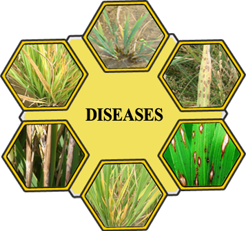

|
|
Diseases

- In rice, diseases are caused by fungi, bacteria and viruses.
- Losses due to the diseases in rice are very heavy and famines have been reported in the history due to the crop diseases.
- Our country faced a severe famine in 1943 in Bengal due to epidemic outbreak of brown leaf spot (Helminthosporium oryzae).
- Blast disease was a severe epidemic in 1919 in Thanjavur district.
- It also occurred in severe form in 1985-88 in Tamil Nadu.
- Bacterial blight was an epidemic in 1963 in Bihar.
- Rice Tungro disease outbreak was severe during 1985-87 in Tamil Nadu.
|